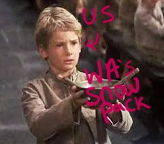
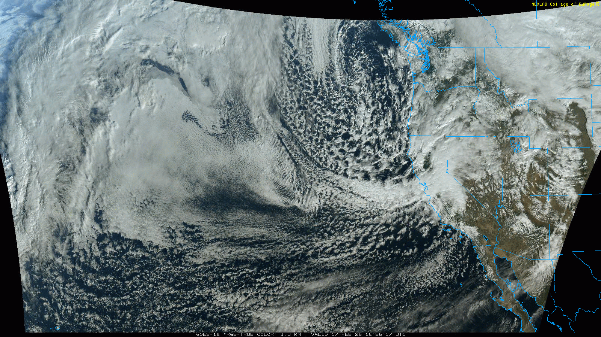
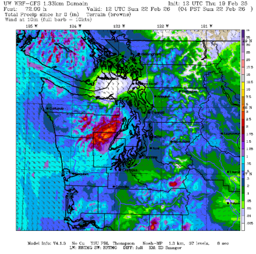
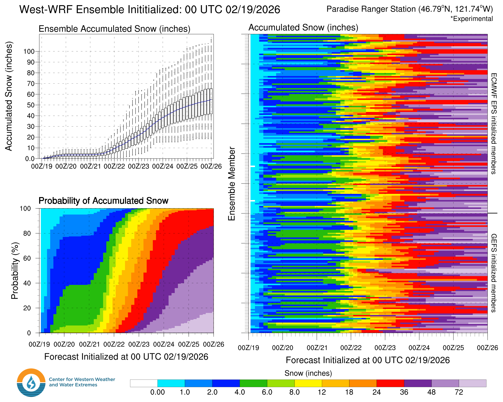
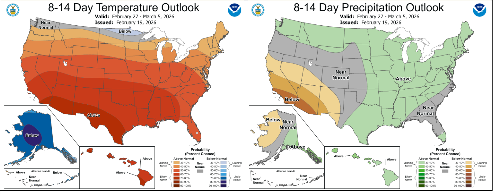

So close you can almost taste it. Are we next in line? 😋❄️
Welcome to The Dendritic Growth Zone!
Past Week's Recap
Observation Highlight from the Past Week
As Natasha Bedingfield accutaley attested in her hit 2004 song "Unwritten": so close you can almost taste it. This past week, the combination of cold air and moisture that we have been waiting for was just down the street. A deep, closed low pressure system parked itself off the OR/CA coast for several days and maintained a consistent stream of moisture that slammed itself into the Sierras and southern Oregon mountains. This event produced substantial amounts of snow over a relatively short period. However, we were just to far north, leaving us with the scraps and asking the atmosphere "Please sir, may I have some more".


🧙♂️ Forecast Discussion
Short-term (Friday-Sunday)
Temperatures will begin a gradual rebound this weekend as the pattern shifts across the Pacific Northwest. A transient ridge moves overhead on Friday, shutting down the recent northerly flow and effectively cutting off the Fraser River outflow. Expect drier skies and lighter winds to close out the work week.
That break will be short-lived. A low dropping south from the Gulf of Alaska strengthens as it approaches the coast and is forecast to set up just offshore of Oregon and Washington. This configuration will reintroduce southerly flow and support a weak to moderate atmospheric river event.
Precipitation should begin mid-morning Saturday, spreading from south to north through the day. The Olympics and southern Washington Cascades appear favored for earlier and more consistent precipitation. In contrast, the Mount Baker area may not see meaningful accumulation until mid- to late afternoon as the moisture lifts northward.
Fortunately, this system does not tap into a egregiously warm air mass. Freezing levels will rise, but modestly, limiting rainfall above roughly 4,000 feet. Most higher elevations should remain predominantly snow, particularly during the initial surge of moisture.
The offshore low is expected to linger and spin through the weekend, delivering multiple rounds of precipitation. While this does not appear to be a high-impact event, periodic moderate precipitation is likely, with mountain accumulations building gradually through Sunday.

Medium-Term (Monday-Wednesday)
The fun continues into next week and the patten becomes even more enticing. However, we will note
that this had been the story of the last several weeks: about 5-8 days out from an awesome looking
pattern, the forecast looks fantastic. Then as we get closer, all those wonderful forecasted snow totals
disappear like a mirage in the desert.

But, I hold out a bit more hope for this upcoming week. The reason being that the positioning of the large trough
that brings our weekend moisture becomes a bit more favorable as it retrogrades westward. This allows for a few snowmaking
haymakers to roll down the BC coast and eventually arrive in our mountains through Tuesday. Once this pattern kicks out, another
setup with a well oriented trough that brings cold, moist flow perpindicular to our mountains can further enhance the
snow potential.
This has lead to some decent agreement on some reasonably substantial snowfall.
However, I am being careful with my language here because there is still time for this
pattern to disappear. Yet, the worst case scenario ensemble members for areas like Baker and Paradise
still have 1-2 feet of new snow in the next 7 days.
.png)
🧙🔮🧙♂️ Reading the crystal ball - 7+ day outlook
This upcoming week is transitioning much of the lower 48 to an above normal temperature pattern, but the CPC projects we will be one of the few areas that will remain near normal. With projected above average precipitation, it may not be a surprize that the experimental hazard outlook has us set for a risk of heavy snow between 2/27 and 3/1

❄️ Snowfall
Weekend Snow Accumulation Forecast
| Site | Through 4am Saturday | Through 4am Sunday | Weekend Snow Accumulation (4pm Thursday through 4am Monday 16 Feb) |
|---|---|---|---|
| Mt. Baker (4500') | 0" | 2-5" | 5-8" |
| Washington Pass | 0" | 2-4" | 4-8" |
| Stevens Pass (4500') | 0" | 2-4" | 4-7" |
| Hurricane Ridge | 0" | 2-5" | 5-8" |
| Blewett Pass | 0" | 0-2" | 2-4" |
| Snoqualmie Pass | 0" | 1-3" | 3-6" |
| Crystal (5000') | 0" | 3-5" | 5-9" |
| Paradise | 0-2" | 5-10" | 8-14" |
| White Pass (5000') | 0-2" | 4-7" | 7-11" |
🧊 Freezing Level
- Friday: 0-2000 feet
- Saturday: 3000-6000 feet
- Sunday: 6000-3500 feet
🎿 Our Recommendations
Best Choice This Weekend: Paradise and White Pass on Sunday
If the interior Olympics above 5000' were easily accessible this would be my call. But they aren't. Therefore, the next areas in line are those seeing the most consistent preciptiation. It might be wet snow, but it should stay as snow nontheless.
Runner-Up: Mt. Baker on Saturday
Baker saw the best accumulations this week, with 15-20" of new snow around the region. This weekend would be a great opportunity to take advantage of that areas solid snow cover and then grab any fresh snow that falls if it happens to come earlier than expected on Saturday.